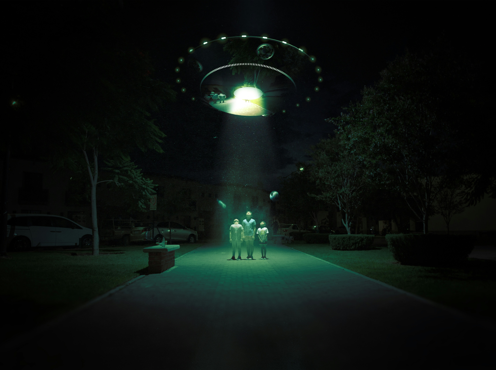

Breaking news: Aliens attack ice cream shop

Aliens Caught on Camera
Press Conference about Alien Dispute
The Main Scoop
The situation escalated when one alien allegedly fired a strange blue beam at the freezer, causing every tub of ice cream to float several feet into the air. Customers reportedly screamed as scoops of ice cream drifted around the room like colorful planets. The attack ended approximately 15 minutes later when Parker handed the aliens a giant banana split. “They ate the whole thing,” she said. “Then they gave us a thumbs-up and left.” The aliens returned to their spaceship and disappeared into the clouds, leaving behind several melted ice cream cones and one mysterious purple footprint. Local authorities say there is currently no evidence that the aliens intend to return. Frosty’s Ice Cream Shack, however, has already added a new flavor to its menu: “Alien Attack” — purple cotton candy ice cream with green sprinkles. “It seemed appropriate,” Parker said.
Eyewitness accounts
Witnesses say the creatures emerged from a glowing screen spaceship shortly after 2pm. The aliens, desribed as having enormous purple eyes, three arms, extremely shiny heads. marched towards the shop while repeatedly shouting what sounded like "CHOCOLATE!"
"I thought it was a promotional stunt," said longtime customer Jerry Thompson. "Then one of them lifted a picnic table with one hand. That's when I decided to leave."
Inside the shop, employees scrmbled to protect the ice cream. According to manager Linda Parker, the aliens appeared particularly interested in the chocolate, mint-chip, and cookie dough flavors. "They completely ignored the vanilla," Parker said. "Honestly, I think they have good taste."